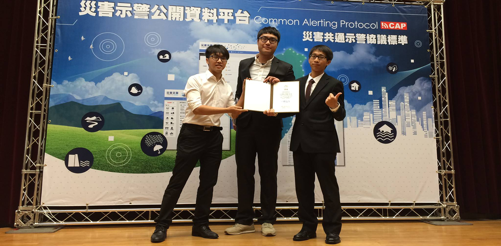

Certificates
Because of my interest diversities, I would like to try and realize lots of knowledge from different fields, and I even took exam for many licenes as following statements...
| 1 |
2011 Chinese Tour Leader Qualification |
Qualified |
| 2 |
2011 Chinese Tour Guide Qualification |
Qualified |
| 3 |
Chinese Taipei Volleyball Association |
Volleyball Referee Level C |
| 4 |
Taiwan Business Strategy Assciation |
Primary Planner |
| 5 |
Chinese Taipei Water Life Saving Association |
Lifeguard Qualification |
| 6 |
Lifeguard Certificate |
Certified |
| 7 |
Water Life Saving Association New Taipei City |
Swimming Coach Level B & C |
| 8 |
Elementary Teacher Qualification Examination |
Elementary Teacher Qualification |
| 9 |
HACCP Controlling Primary Qualification |
HACCP Controlling Qualification |
| 10 |
HACCP Controlling Advanced Qualification |
HACCP Controlling Qualification |
| 11 |
Emergency Medical Technician :: Level 1 (EMT1) |
EMT 1 |
Awards
I would like to participate competitions and fortunately I have got these awards ...
Academic
| 1 |
101th Undergraduate Project Presentation |
Elected (The Top Award) |
| 2 |
The 12th Cross-Strait symposium on Environmental Resources and Ecological Conservation |
The First Prize (The Top Award) |
| 3 |
The 14th Cross-Strait symposium on Environmental Resources and Ecological Conservation |
The Second Prize |
| 4 |
The 15th Cross-Strait symposium on Environmental Resources and Ecological Conservation |
The First Prize (The Top Award) |
| 5 |
Presidential Award @ Dept. of Social and Regional Development, NTUE |
Spring’10, Fall’11 |
| 6 |
2014 Disaster Prevention and Warning Application in APP Competition |
Student Division: The Third Prize |
Scholarship and Honors
| 1 |
Budget Supplement for Graduated Student Attending International Conference (2014) |
Ministry of Science and Technology |
| 2 |
Graduate Student Representative of College of Science (2017-2018) |
National Taiwan University |
| 3 |
College of Science Travel Grants for International Conference (2019) |
National Taiwan University |
| 4 |
Grant for Ph.D. Candidates in the Humanities and Social Sciences to Write Doctoral Thesis (2019-2020) |
Ministry of Science and Technology |
Sport
| 1 |
2008 Social Volleyball Cup |
Gold Medal |
| 2 |
2008 Social Education Cup :: Volleyball |
Silver Medal |
| 3 |
2009 Social Volleyball Cup |
Gold Medal |
| 4 |
2009 Social Education Cup :: Volleyball |
Gold Medal |
| 5 |
2009 Department Border Cup :: Volleyball |
Bronze Medal |
| 6 |
2010 Social Volleyball Cup |
Gold Medal |
| 7 |
2010 North Social Cup :: Volleyball |
Gold Medal |
| 8 |
2010 Social Education Cup :: Volleyball |
Gold Medal |
| 9 |
2010 Department Border Cup :: Badminton |
Bronze Medal |
| 10 |
2010 Department Border Cup :: Volleyball |
Gold Medal |
| 11 |
2011 Social Volleyball Cup |
Gold Medal |
| 12 |
2011 North Social Cup :: Volleyball |
Gold Medal |
| 13 |
2011 Social Education Cup :: Volleyball |
Gold Medal |
| 14 |
2011 Department Border Cup :: Volleyball |
Gold Medal |
| 14 |
2011 Aquatic Meeting :: 50M Front crawl |
Gold Medal |
| 15 |
2011 Aquatic Meeting :: 50M Breaststroke |
Silver Medal |
| 16 |
2013 Aquatic Meeting :: 200 m relay |
Silver Medal |
| 17 |
2013 Aquatic Meeting :: 400 m relay |
6th Prize |
| 18 |
2014 NTU Swimming Cup :: 200 m relay |
Bronze Medal |
| 19 |
2017 NTU College of Science Cup :: Badminton |
Silver Medal |